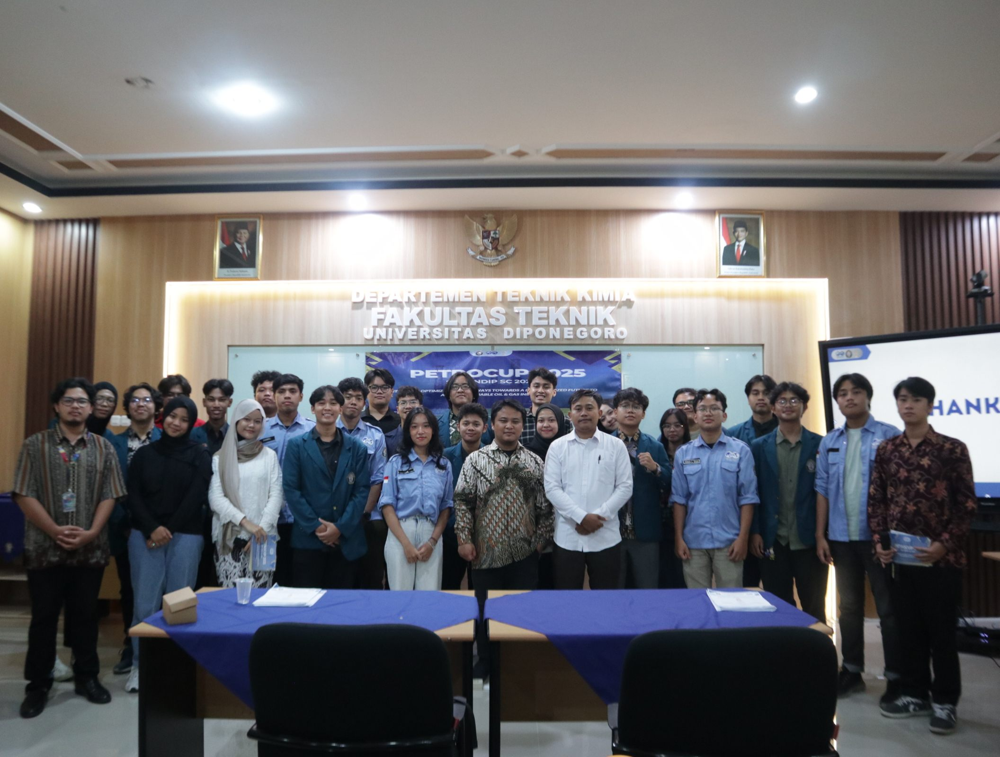
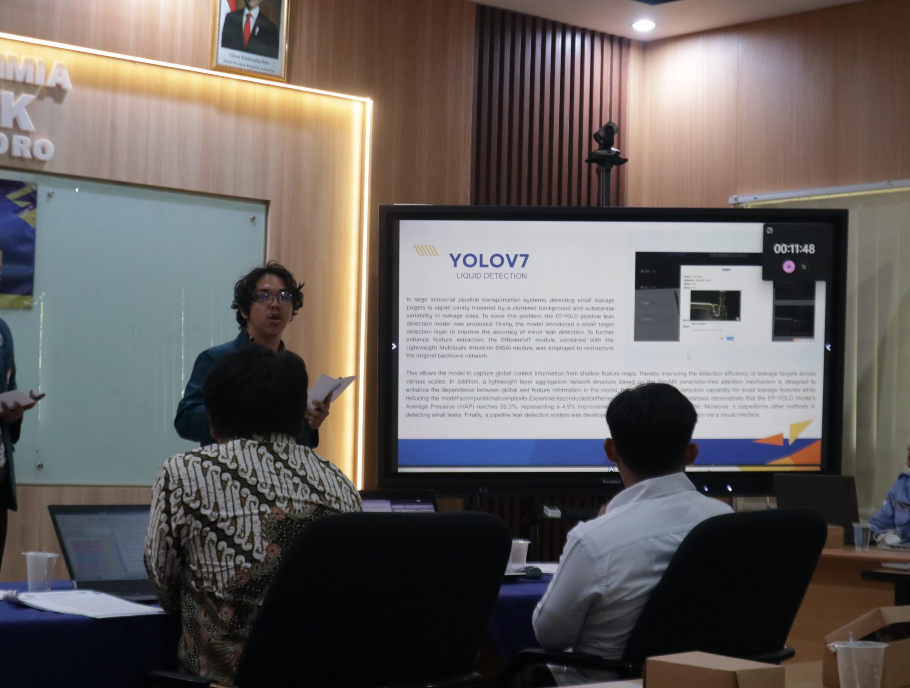
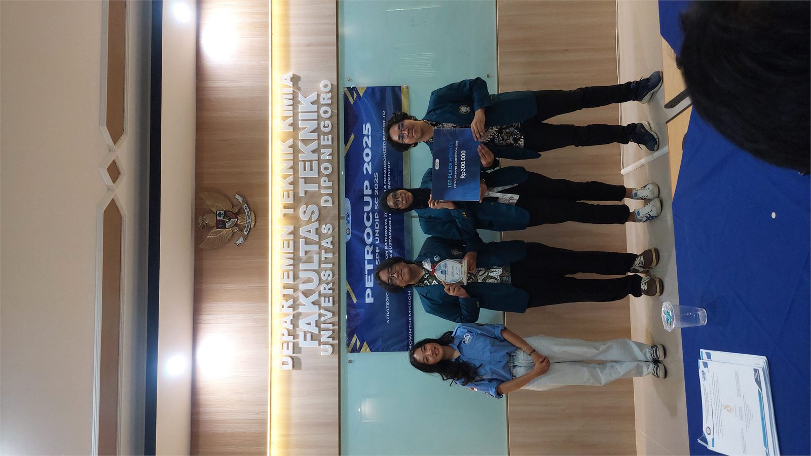
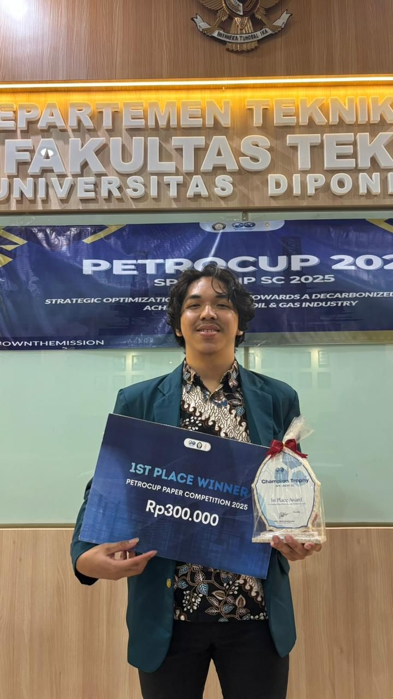
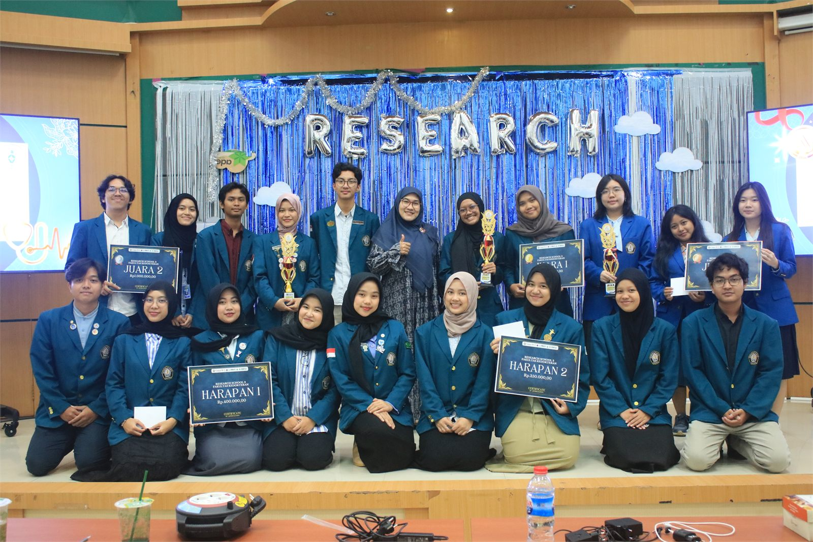
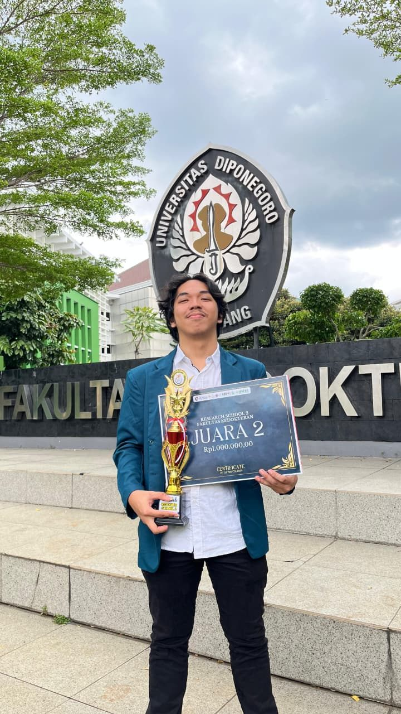
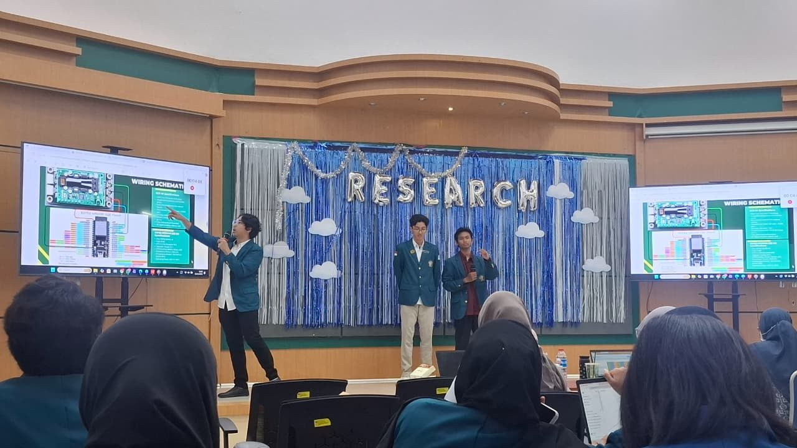
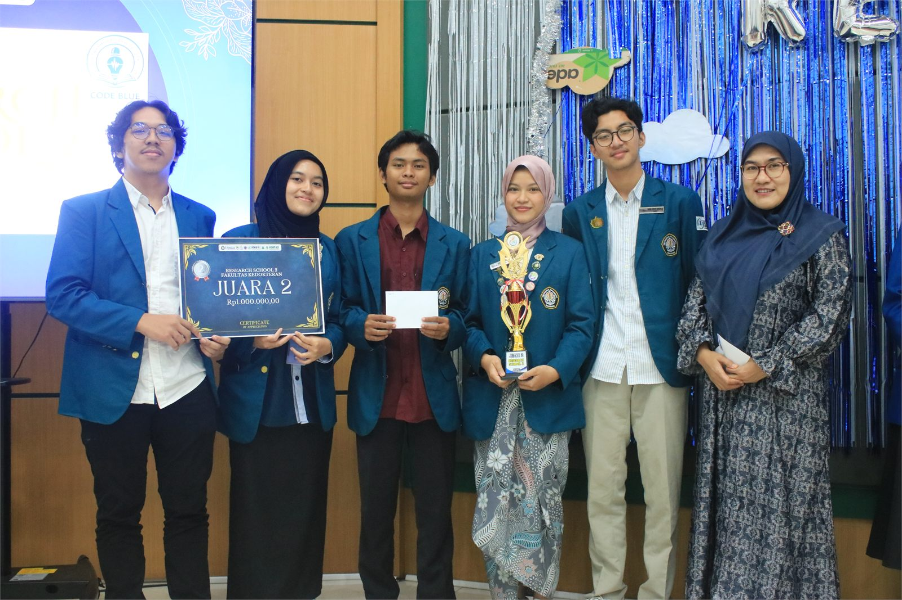
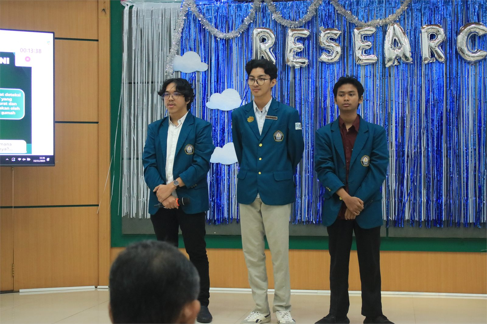
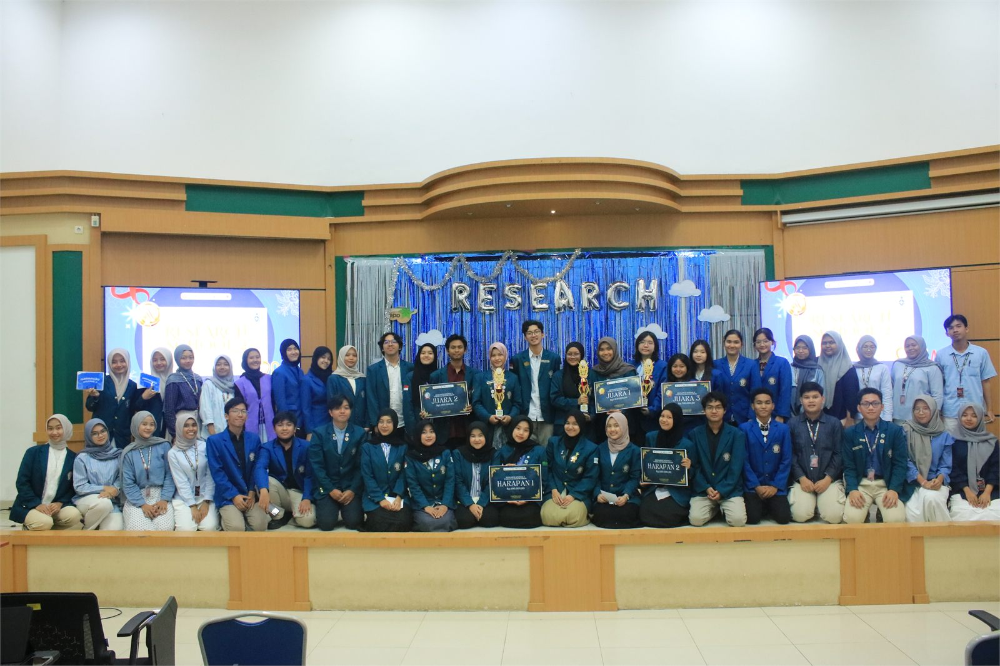

Lolos Pendanaan PKM-KC 2026
Terlibat dalam tim yang lolos pendanaan Belmawa untuk pengembangan gagasan karya cipta mahasiswa.
Achievements
Beberapa pencapaian berikut berasal dari kompetisi, riset terapan, paper competition, presentasi ide, dan kerja tim.
Terlibat dalam tim yang lolos pendanaan Belmawa untuk pengembangan gagasan karya cipta mahasiswa.
Diselenggarakan oleh SPE Universitas Diponegoro Student Chapter. Penghargaan ini diraih melalui penyusunan paper dan presentasi tim.
Diselenggarakan oleh BEM Fakultas Kedokteran UNDIP. Penghargaan ini diraih melalui proses riset, penyusunan paper, dan presentasi.
Dokumentasi presentasi, sesi bersama peserta, dan momen penghargaan Juara 1 PETROCUP Paper Competition 2025.




Dokumentasi presentasi, tim, dan momen penghargaan Juara 2 Research Paper Research School 2 Fakultas Kedokteran 2025.





